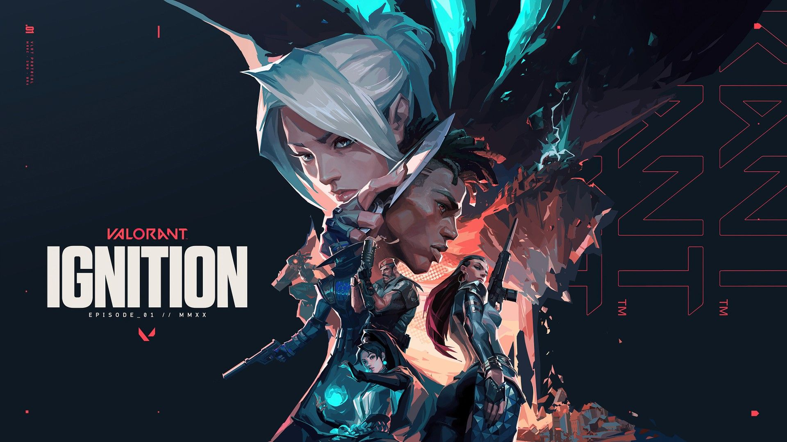

GAME MODS
Game Modes are different types of modes that can be played in Valorant. Most modes can be categorized as either Plant/Defuse-style or Deathmatch-style. Players can access five modes at a time, with four permanent (Unrated, Competitive, Spike Rush, and Deathmatch) and one other that is part of a rotating game mode queue that changes every patch (Escalation, Replication, and Snowball Fight).
Unrated
In the standard non-ranked mode, the match is played as best of 25 - the first team to win 13 rounds wins the match. The attacking team has a bomb-type device called the Spike. They must deliver and activate the Spike on one of the multiple specified locations (bomb sites). If the attacking team successfully protects the activated Spike for 45 seconds it detonates, destroying everything in a specific area, and they receive a point. If the defending team can deactivate the spike, or the 100-second round timer expires without the attacking team activating the spike, the defending team receives a point. If all the members of a team are eliminated before the spike is activated, or if all members of the defending team are eliminated after the spike is activated, the opposing team earns a point.[3] If both teams win 12 rounds, sudden death occurs, in which the winning team of that round wins the match, differing from overtime for competitive matches. Additionally, if after 4 rounds, a team wishes to forfeit that match, they may request a vote to surrender. If the vote is unanimous, the winning team gets all the victory credit for every round needed to bring them to 13, with the forfeiting team receiving losing credit. A team gets only two chances to surrender: one as the attackers and the other as the defenders.
Spike Rush
In the Spike Rush mode, the match is played as best of 7 rounds - the first team to win 4 rounds wins the match. Players begin the round with all abilities fully charged except their ultimate, which charges twice as fast as in standard games. All players on the attacking team carry a spike, but only one spike may be activated per round. Guns are randomized in every round and every player begins with the same gun. Ultimate point orbs in the standard game are present, but there are multiple power-up orbs instead.
Competitiv
Competitive matches are the same as unranked matches with the addition of a win-based ranking system which assigns a rank to each player after 5 games are played. Before you can play in competitive games, you will need to win 10 unrated matches beforehand. In July 2020, Riot introduced a "win by two" condition for competitive matches, where instead of playing a single sudden death round at 12-12, teams will alternate playing rounds on attack and defense in overtime until a team claims victory by securing a two-match lead. Each overtime round gives players the same amount of money to purchase guns and abilities, as well as approximately half of their ultimate ability charge. After each group of two rounds, players may vote to end the game in a draw, requiring 6 players after the first set, 3 after the second, and thereafter only 1 player to agree to a draw. The competitive ranking system ranges from iron to radiant. Every rank but immortal and radiant has 3 tiers.
Deathmetch (free for all)
The Deathmatch mode was introduced on August 5, 2020. 14 players enter a 9-minute free-for-all match and the first person to reach 40 kills or the player who has the most kills when time is up wins the match. Players spawn in with a random agent, and all abilities are disabled during the match which indulges pure gunplay. Green health packs drop on every kill, which set the player at maximum health, armor, and ammunition, unless the player is using a machine gun, which only gives the player an additional 30 bullets.
Escalation
The Escalation gamemode was introduced in February 2021 and is similar to the "gungame" concept found in Counter-Strike and Call of Duty: Black Ops, though it is team-based rather than free-for-all with 5 players on each team. The game will pick a random selection of 12 weapons to move through. As with other gungame versions, a team needs to get a certain number of kills to advance to the next weapon and the weapons get progressively worse as the team moves through them. There are two winning conditions, if one team successfully goes through all 12 levels, or if one team is on a higher level than the opposing team within 10 minutes. Just like Deathmatch, players spawn in as a random agent, unable to use abilities, as the gamemode is set for pure gun fights. Though, abilities like Sova's shock darts, Raze's boom bot, and rocket launcher, are abilities that everyone gets to use as a weapon. After a kill green health packs drop, which replenishes the player's health, armor, and ammo to its maximum. The gamemode also has auto respawns on, respawning players in random locations around the map.